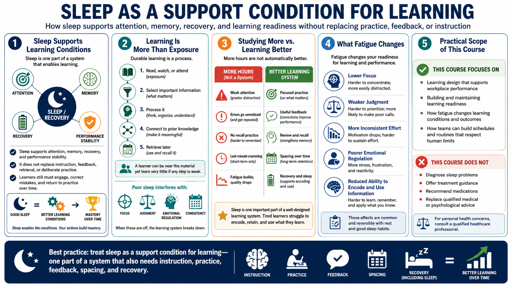

Why Sleep Matters for Learning
Connecting to LMS... Progress: in progress

Narration
Sleep is best understood as a support condition for learning. It supports attention, memory, recovery, and performance stability. It does not replace instruction, feedback, retrieval, or deliberate practice. A person still has to engage with the material, use the skill, correct mistakes, and return to practice over time. Sleep helps create the conditions in which that work can happen more reliably.
Learning is more than exposure to information. A learner can read, watch, or attend and still fail to build durable understanding. The brain has to select important information, process it, connect it to prior knowledge, and make it available later. Poor sleep can interfere with focus, judgment, emotional regulation, and consistency, which means the learner may spend time near the material without getting much learning from it.
The difference between studying more and learning better matters. More hours are not automatically better if attention is weak, errors go unnoticed, or recall is never practiced. A well-designed learning system combines focused practice, useful feedback, review, spacing, and recovery. Sleep is one part of that system because tired learners often struggle to encode and use what they are trying to learn.
This course stays practical and non-clinical. It does not diagnose sleep problems, offer treatment guidance, recommend medications, or replace qualified medical or psychological advice. The focus is learning design and workplace performance: how sleep and recovery affect readiness, how fatigue changes learning conditions, and how teams can build schedules and routines that respect human limits.